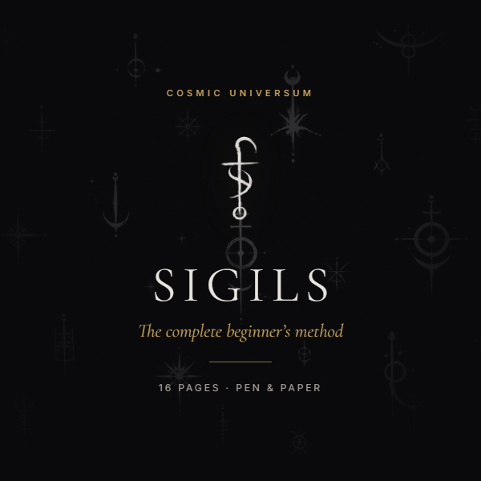

The part I could not
fit on one page
How to actually let a sigil go, and the rest of the method in full.
Everybody agrees that letting go is the hard step. Almost nobody tells you how to do it, because the usual advice is to simply stop thinking about something, which is not advice at all.
Here is the technique that fixed it for me. It is in the book, and I am going to give it to you now anyway, because it is the best thing I know and a description of it is not the same as the practice around it.
The batch method
Instead of making one sigil, make five or six over an evening, for five or six different things. Do not charge any of them. Put them all in a box or an envelope and leave them alone for a week.
Then take one out without looking through them. You will not know which one it is, because you spent the folding step making it unreadable. Charge that one, put it away, and take another out next week.
You cannot obsess over a wish you cannot identify. You are not resisting the urge to check, because there is nothing identifiable left to check on.
I found two practitioners describing that independently, in different threads, years apart. Neither had published it anywhere findable.
It has one gap, and it is the obvious one. It cannot help with a single wish that matters too much to shuffle into a box and forget, which is usually the one you most want to get right. There are five other ways for that, and they are in the book.
What the book is

Sixteen pages. Built from Spare's own account of the method, the reading that came after it, and a lot (I mean - A LOT :) beginner questions behind page one. Every source named so you can check the work.
PDF. Instant download. Reads on a phone, and prints at home if you want the method card on paper.
| Pages | What is on them |
|---|---|
| 2 to 5 | The five step method in full, with a worked example folded stage by stage, and the three rules for writing a sentence that will not need correcting |
| 6 | Did I do it right, answered properly, with the self test |
| 7 to 10 | Nine ways to charge a sigil, starting with one that needs nothing but two minutes. Including the breathing method written out as a full procedure, and the alarm clock method |
| 11 to 14 | Six ways to actually let go, led by the batch method. Plus keep it or destroy it, and the four elements of getting rid of one |
| 15 | How long to wait, how to tell whether it worked, and four honest reasons one fails |
| 16 | A one page method card to screenshot or print, and every source named |
The word gnosis is defined once in plain language and then set aside, because you do not need it and experienced practitioners disagree about whether anyone does.
Downloads straight away. Reads on a phone, and prints at home if you want the method card on paper.
What it does not do
It does not promise that sigils always work, because they do not. No honest account of this practice claims otherwise, and the book has a section on what to do when one fails.
There are no testimonials on this page because the book is new and I do not have any yet. When I do, the real ones will go here.
It is not medical, financial or psychological advice.
Can I not just find this free?
Some of it, yes. You just did, on the previous page, and I meant it when I said nothing there was gated.
What is hard to find free is the rest of it in one place, checked, with the contradictions sorted out. Spare's own book is dense, strange and a hundred years old, and the method occupies a few paragraphs of it. The forums have genuinely good answers scattered across hundreds of threads, mixed in with a lot that is wrong.
You are paying for somebody having done that reading. If you would rather do it yourself you can, and page one will get you started properly.
If it is not what you expected, email me and I will refund it.
Sources
| Source | Used for |
|---|---|
| Austin Osman Spare, The Book of Pleasure, 1913 | The original method and the quotation on page one |
| Peter J. Carroll, Liber Null & Psychonaut | Not quoted. The book that carried Spare's method into modern practice, and the obvious next thing to read |
| 441 beginner posts (according to my browser history) across nine practitioner forums | The three questions, the corrections people actually receive, the charging alternatives and the batch method |